HUB FIXES · 30 SEP
Your three notes from this morning, and what changed for each. Everything below was measured in a hidden test browser on this Mac (never on your screen), with your real 128 liked names and live prices, between 10:55 and 11:35 ET.
- The LIKED list scrolls now. It kept jumping back to the name you had open every time that name's price ticked (about every 1-3 s), so you could never get to the bottom. It now stays where you leave it. The page behind it no longer moves either.
- The RSI is the pink one and it is no longer cut off. The Hub was already showing yesterday's pink RSI-only panel (it went live at 10:40), but it was squeezed into a 40-47 px strip on the normal dashboard, and in the expanded view its bottom half sat under the tapes at the bottom of the screen. Both are fixed.
- A clicked chart goes first. The dashboard fires one small price-history read per name for the market map (about 590 on ALL). They used to go out 73 at once; they now go 12 at a time, and the moment you click a name they step aside until your chart has its price and clouds.
1 · THE LIKED LIST IN THE EXPANDED VIEW
What was wrong
Every time the open name's price ticked, and every time the board refreshed, the list was redrawn and then scrolled back so that the open name was in view. If you had scrolled away from it, you were pulled back within 1-3 seconds. With the mouse wheel, a trackpad or a finger the list never reached its last name.
Two smaller things made it worse. When the list hit its end, the leftover scroll moved the page behind it (70 px measured). And the expanded view was 49 px taller than the space it has at 1680 × 1050, so the last name and a half were hidden under the tapes and could only be reached by scrolling the page.
What changed
- The list only brings the open name into view when the name changes (you click another, or use ↑/↓), when the expanded view opens, or when you press DAY % / GEIGER. A price tick or a board refresh no longer moves it.
- When the list reaches its end, the scroll stops there. It is not passed on to the page.
- The expanded view now fills exactly the room between the top and the tapes, whatever size the window is. It no longer uses a fixed height that ignored the desk zoom.
Proof (128 liked names, 1680 wide)
| how you scroll | before: furthest it got | before: then | after: furthest | after: then |
|---|---|---|---|---|
| mouse wheel over the list | 1,016-1,953 of 3,492 px | jumped back to the top in 1.3-1.8 s | the last name (VIX) | stayed; wheel up returns to the top |
| trackpad (many small steps) | 408-1,083 px | jumped back in 1.3 s | the last name | stayed; back to the top |
| finger swipes | 363-1,486 px | jumped back in 0.8-2.0 s | the last name | stayed; back to the top |
| left halfway, 60 s of live ticks | — | jumped back after ~1 s | — | did not move in 60 s |
| the page behind the list | moved 70 px when the list hit its end | never moved (it has nothing to scroll now) | ||
| phone (390): the list runs across the top | 3,018 px | jumped back to the open name in <3 s | the last name (11,910 px) | stayed; swipe back returns to the start |
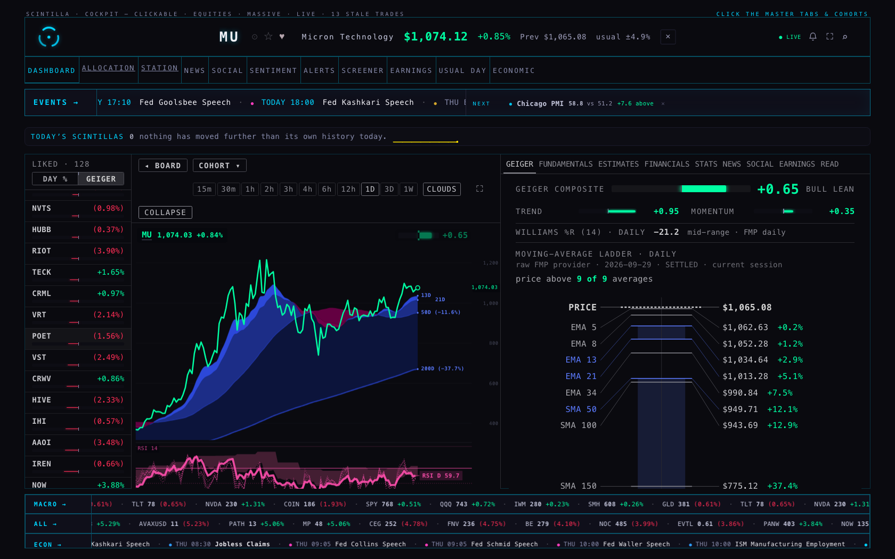
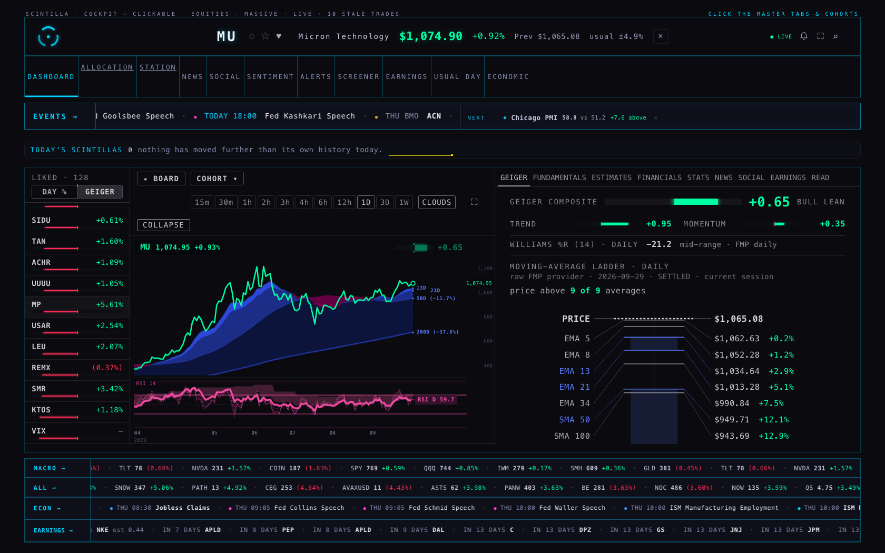
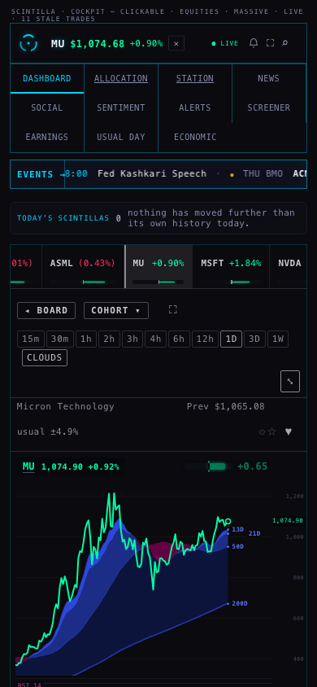
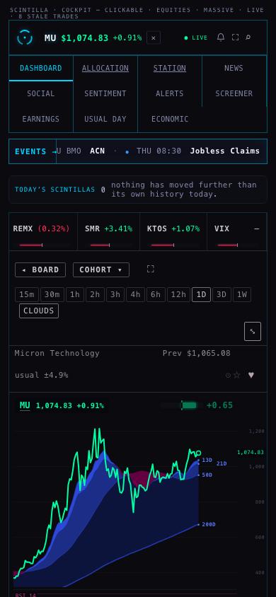
2 · THE RSI UNDER THE COMPANY CHART
What was wrong
Your note came at 10:20, twenty minutes before the Station's new pink RSI-only panel went live (10:40). Since then the Hub already shows it: six pink lines (3H 4H 6H 8H 12H dotted, the daily solid), the slow pink cloud, the 30 and 70 lines, a fixed 0-100 scale and the RSI D tag. I checked the live Hub: it asks the Station for the full six-line version, not the old single line. So the remaining problem was room:
- Normal dashboard (not expanded): the chart box was 207-229 px tall and the Station gives the RSI a quarter of it, so the RSI got 40-47 px. The 30 and 70 lines were 14-17 px apart, the "RSI 14" title sat on top of the 70 line, and the six lines were squashed into one pink smear.
- Expanded view: the RSI had plenty of height, but the chart's bottom ran under the tapes (see item 1), so the lower half of the RSI and the dates were cut off.
What changed
- On the normal dashboard the chart keeps at least 300 px. The RSI panel is now 72 px, a little more than the Station gives it on its own eight-chart wall (66 px). The 30 and 70 lines are 26 px apart, the title is clear of them, and the tag sits at its true value. The tabs underneath (GEIGER, FUNDAMENTALS …) start lower but are still on screen.
- The expanded view fits above the tapes (item 1), so its RSI (74-89 px, depending on how many tape rows are showing) is whole, dates included.
- Phone: already fine (98-105 px), and unchanged.
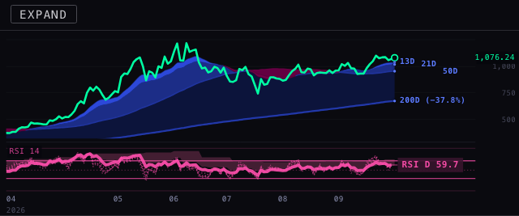
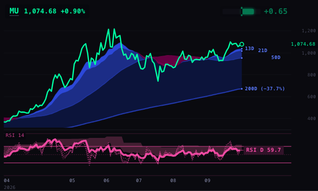
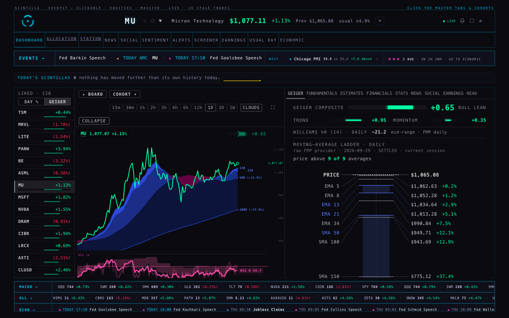
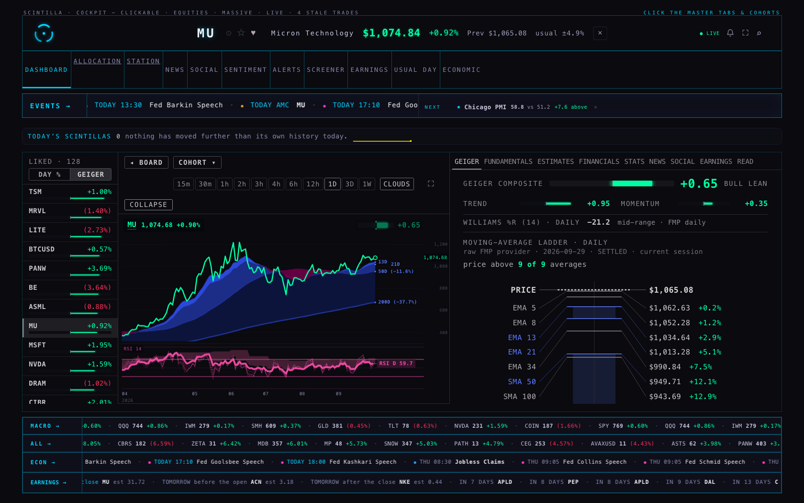
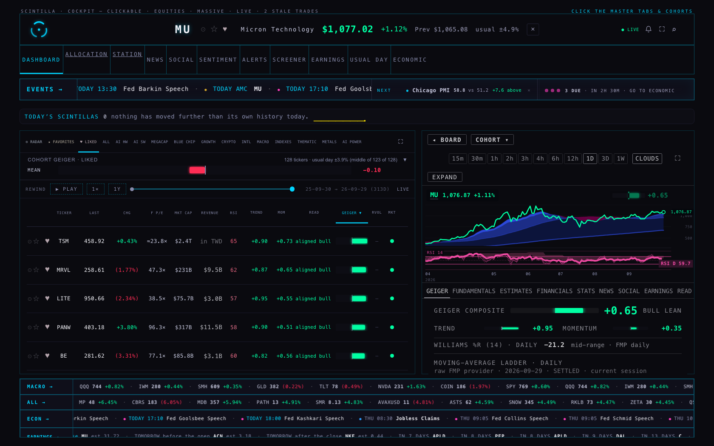
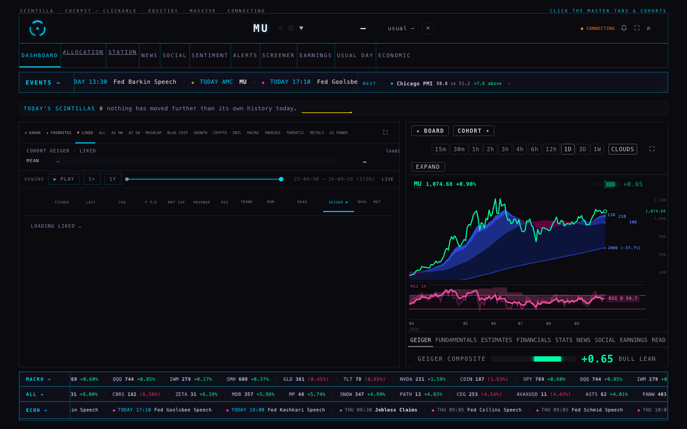
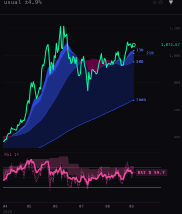
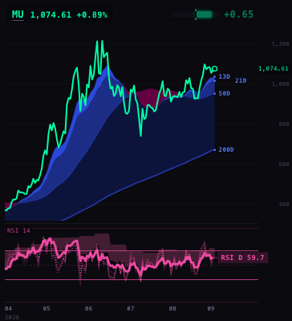
3 · A CLICKED TICKER'S CHART GOES FIRST
What was wrong
For the market map's colours, the dashboard reads a small piece of price history for every name on the board: 128 on LIKED, about 546-590 on ALL. They went out 73 at a time, as fast as they could. The chart server answers one request after another (lane P6 measured about 0.12 s of work each at 10:30). So a chart you clicked during that burst waited behind up to 114 of them. At 10:30 each of those reads took 1.3-1.7 s.
What changed
- At most 12 of these reads are out at once.
- The moment a company chart is pointed at a name (a click, ↑/↓, a timeframe, CLOUDS), the ones already out are cancelled, and no new ones start. They resume 3 s after the chart's frame has loaded (8 s at the most). The cancelled ones go first when they resume, so nothing is lost.
- When the chart server offers one request for many names (
/sparklines, lane P6, not live yet), the Hub uses it automatically: about 8 requests for all of ALL instead of about 590. If the server doesn't have it, the Hub notices once and goes on as above.
Measured, real network, 11:10-11:25 ET (market open)
Click NVDA at 0 s, 3 s and 15 s after the board's rows are on screen. Price = the chart's price line is drawn. Clouds = its moving-average clouds are drawn. Times in milliseconds after the click; a range covers the repeat runs.
| board · click at | map reads in flight at the click | price · before | price · after | clouds · before | clouds · after |
|---|---|---|---|---|---|
| ALL · 0 s | 108-114 → 1 | 353-616 | 343-473 | 436-2,418 | 557-641 |
| ALL · 3 s | 1-68 → 12 | 343-630 | 325-495 | 480-686 | 373-538 |
| ALL · 15 s | 0 → 0 | 293-1,025 | 426-556 | 497-1,117 | 600-606 |
| LIKED · 0 s | 73 → 1 | 415-797 | 308-383 | 501-1,051 | 473-602 |
| LIKED · 3 s | 0-1 → 0-8 | 323-670 | 400-2,116* | 753-872 | 654-2,199* |
| LIKED · 15 s | 0 → 0 | 305-401 | 410-447 | 483-514 | 494-656 |
* one run where the server was slow for everything (its /universe read took 0.67 s with none of the map reads out); the repeat was 400 / 654. DATA DELAYED did not show in any run, before or after. 4 runs per cell before on ALL, 2 after; 2 each on LIKED.
Honest reading: at 11:10 the chart server was much quicker than at 10:30 (these reads took 0.3-0.75 s, not 1.3-1.7 s). So today's live numbers only show the edge of the problem: the slow tail (clouds up to 2.4 s) goes away, and the rest is within the noise. To show what happens under the 10:30 load, I also ran a model: the same real data, but every reply waits its turn in a single queue at 0.12 s per request (P6's measurement).
| MODEL: 10:30-style server · ALL · click at | price · before | price · after | clouds · before | clouds · after |
|---|---|---|---|---|
| 0 s | 28.7 s | 2.1 s | not within 30 s | 2.4 s |
| 3 s | 25.9 s | 2.2 s | not within 30 s | 2.5 s |
| 15 s | 22.2 s | 2.4 s | not within 30 s | 2.5 s |
The model is harsher than 10:30 was (its reads waited ~8 s; you measured 1.3-1.7 s), so read it as the worst case, not a forecast.
The cost
On a quiet server, the market map's 4-hour colours for all of ALL now finish about 13-14 s after the board appears, instead of 4-7 s. Until then the map shows its session colours and says so in its header, exactly as it already does while loading. On a busy server there is no cost, because the server was the limit anyway. Once P6's one-request read is live, this shrinks to about 8 requests.
WHERE EACH NUMBER COMES FROM
- List positions, page movement, chart and panel sizes: read out of the page in a hidden Chrome at 1680 × 1050 and 390 × 844, using your real 128 liked names (read only). The RSI panel's size, lines, 30/70 positions and "RSI D" tag come from the Station pane's own record of what it drew.
- Chart timings: the page under test served as scintillahub.ai inside the hidden browser, so every chart and price read went to the live chart API from the real address. Times run from the click to the moment the Station pane had drawn its price and its clouds.
- For the list and RSI shots only, the chart API was reached through a small local relay that adds the scintillahub.ai address (the API accepts only that address). The timing runs did not use the relay.
- Nothing was written anywhere. The test browser blocked every write request. Your liked list, favourites and radar were only read.
WHAT COULD BE WRONG
- The chart hold uses the frame's "loaded" moment plus 3 s. The Station pane tells the Hub nothing about when its price and clouds are drawn, so a very slow chart (more than 3 s after its frame loads) will share the server with the map reads again, 12 at a time.
- Cancelling a read stops the browser waiting for it. A server that already started working on one still finishes it, so up to 12 can still be ahead of your chart.
- The normal dashboard's tabs now start about 150 px lower at 1680 × 1050. On a shorter window you may need to scroll to see much of a tab's content. The expanded view is unaffected.
- The
/sparklinespath is written against P6's branch (its tests: same answer as one read per name, unknown names refused by name). It has not run against a live server, because it is not deployed yet.
WHAT I DID NOT DO
- No deploy, no push. The Station, Indicator Lab,
lab.htmlandprototypes/indicator-lab/are untouched. No Station branch was needed. - No change to how the RSI is calculated or drawn; that is the Station's (S3). I only gave it room.
- I did not see DATA DELAYED in any run, so I could not reproduce that exact message. The 10:30 conditions were gone by the time I measured.
- I did not add a "chart is ready" signal from the Station to the Hub (see decisions).
TESTS
node --test tests/ → 1,573 tests, 1,566 pass, 5 fail. The 5 are the known production failures (Indicator Lab checkpoint · age function · readiness · saved review charts · xfeed-publish). New: hub-h2-rail-scroll, hub-h2-rsi-pane, hub-h2-chart-first (11 tests). Updated: five older tests that now need the pacer's stub. The trial copy at /preview/company-view/ has been rebuilt.